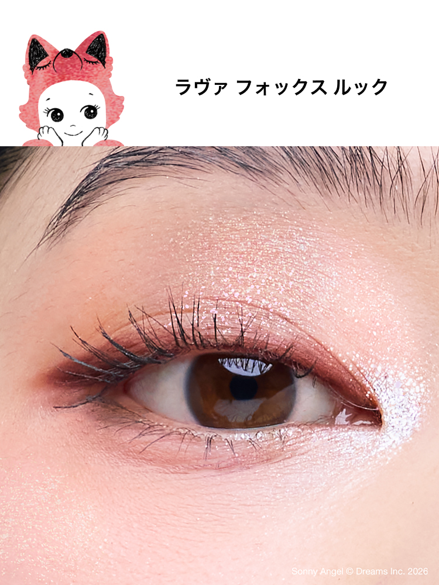
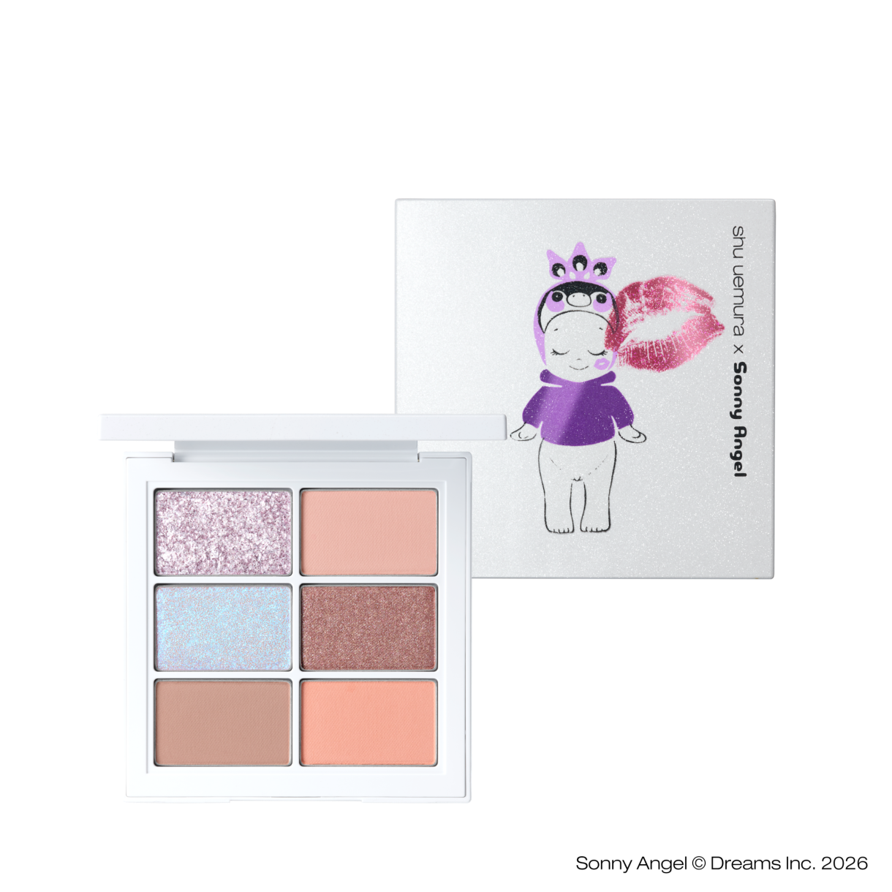
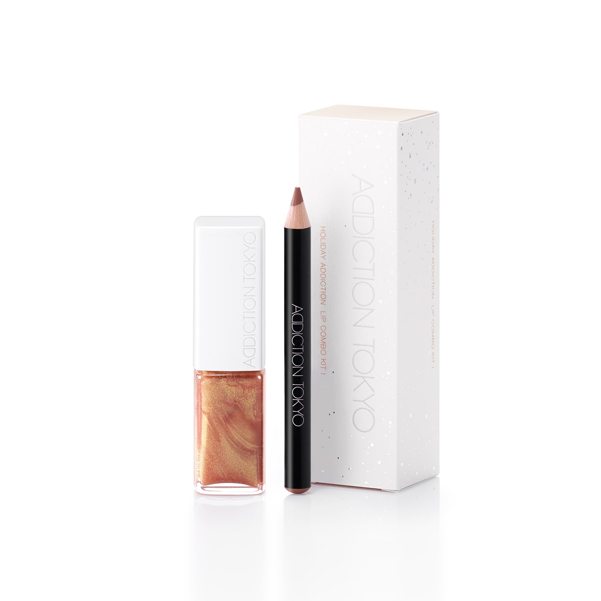
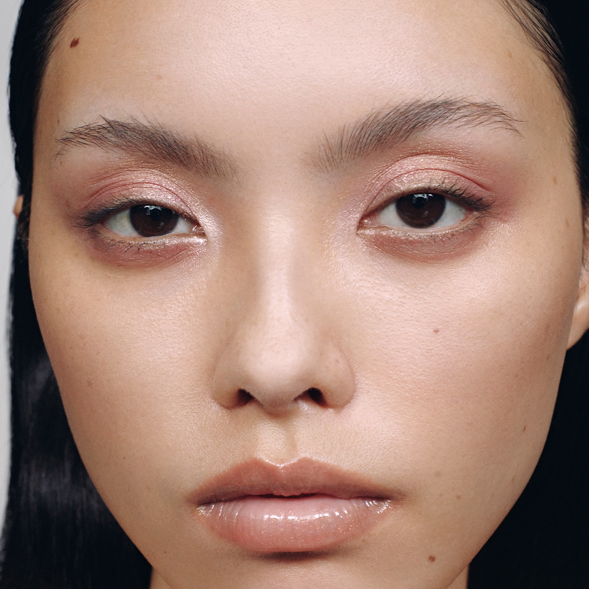
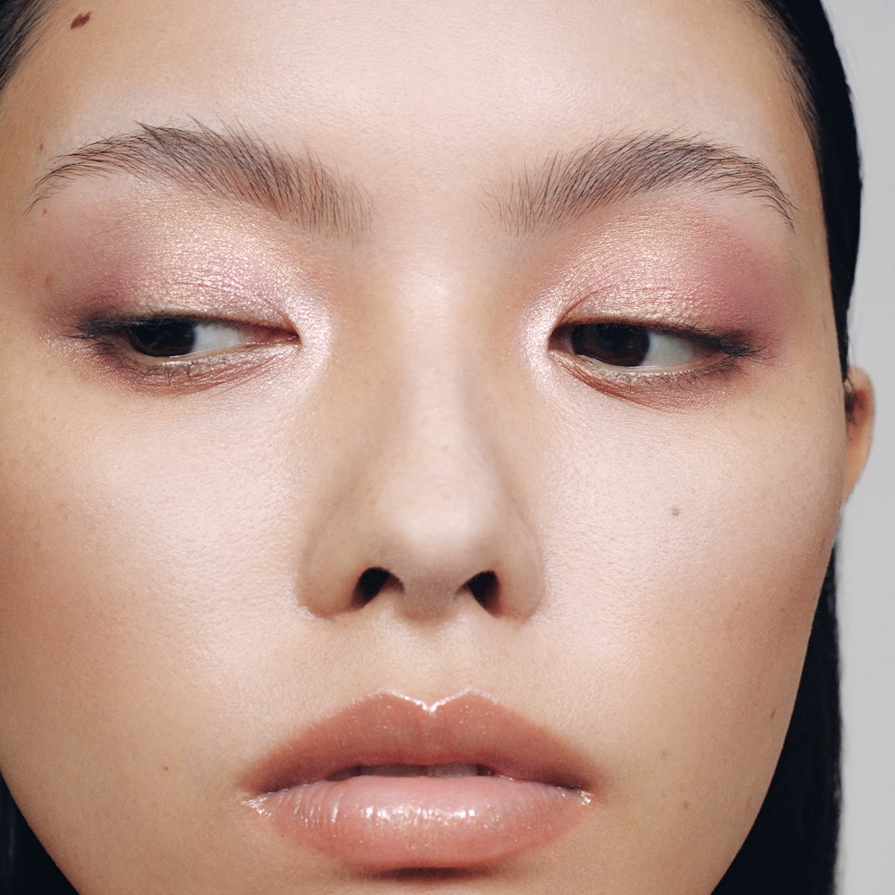

11月日本美妆新品｜植村秀联名与唇妆
11月新品资讯 · 可复制文案
11月日本美妆新品｜植村秀联名与唇妆
11月这两款分别是植村秀联名眼影与ADDICTION唇妆组合，发售日期并不相同。
这次有什么？
Sonny Angel六色盘Take Wing!；ADDICTION假日唇妆组合I。
• Sonny Angel六色眼影盘：日本含税¥7,920
• 假日唇妆组合I：日本含税¥4,620
什么时候卖？
• Sonny Angel六色眼影盘：11月02日；官网：10/22 10:00先行销售；不是预约
• 假日唇妆组合I：11月06日；高岛屋TBEAUT：10/23 10:00预约
大阪：阪急梅田10/23；@cosme OSAKA 10/28先行
未核实
购买前看这里
这是跨品牌资讯合集，图片与商品分别对应，勿把妆容图混用。
近铁天王寺、大丸心斋桥的具体安排与库存，以专柜回复为准。
#日本美妆新品 #11月新品 #圣诞限定
信息依据核对日期：2026-10-14
文案格式更新：2026-10-25（未重新核验全部日期与库存）
来源：品牌／百货／媒体，具体链接如下
https://www.shuuemura.jp/sonny-angel-collection.html
https://www.takashimaya.co.jp/beauty/product.html?p_cd=0002515398&sub_cd=001
下载文案N11 植村秀六色盘 × N12 ADDICTION唇妆组合I · 官方上妆图参考
图1｜植村秀六色盘官方眼妆特写

Lava Fox妆容，对应Take Wing!六色盘；品牌模特图，非消费者测评。
官网来源 · 点击图片查看原尺寸图2｜植村秀六色盘产品图

原始透明PNG，保留官网颜色及包装。
官网来源 · 点击图片查看原尺寸图3｜ADDICTION唇妆组合 I

唇蜜与迷你唇线笔组合，注意与组合II区分。
官网来源 · 点击图片查看原尺寸图4｜ADDICTION官方上唇与整脸参考

组合I商品页对应LOOK1，眼妆及颊妆使用其他产品。
官网来源 · 点击图片查看原尺寸图5｜ADDICTION官方妆容另一角度

同一妆容另一角度，非持妆前后对比。
官网来源 · 点击图片查看原尺寸配图保留原貌，未使用AI生成上妆效果。网络图片公开转载前请确认使用权限。